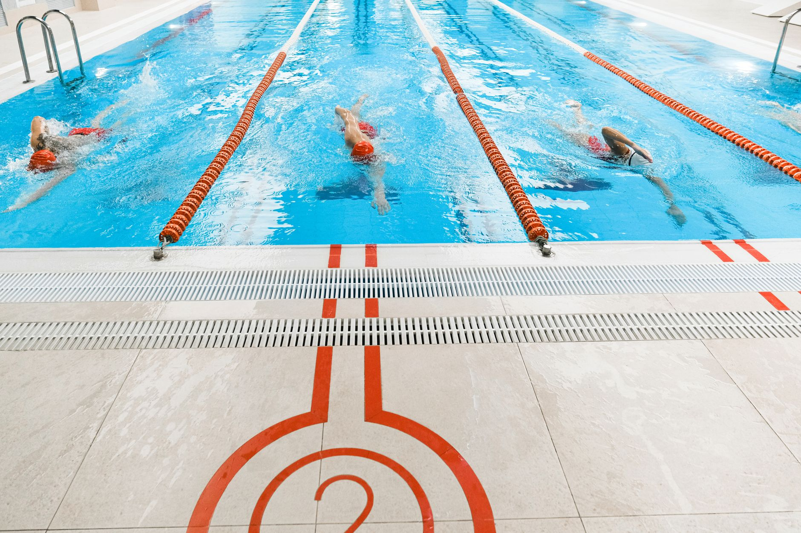

Virginia Makes History — And What It Means for Young Swimmers
The University of Virginia recently captured their sixth consecutive NCAA Division I Women's Swimming and Diving Championship, cementing their place as one of the most dominant programs in college swimming history. Six titles in a row is not an accident. It is the result of intentional culture-building, consistent training, strong coaching, and athletes who commit to excellence every single day.
For young swimmers in Wesley Chapel, Land O' Lakes, and across the greater Tampa Bay area, this milestone is more than just exciting news — it is a roadmap. The habits and values that carry a collegiate program to six straight national championships are the very same ones being developed in youth aquatic programs right now.
Championships Are Built Long Before the Race
One of the most important lessons from Virginia's sustained dominance is that elite performance does not happen overnight. The swimmers who compete at that level did not arrive at the NCAA championships polished and ready. They arrived after years of early mornings, consistent practice, and incremental improvement that began long before high school.
For young athletes in youth programs today, every lap swum in the pool is a deposit into their future potential. Parents in the Tampa Bay area often ask when their child will start to see real results, and the honest answer is that the results are already happening — they are just being stored.
What Young Swimmers Can Learn from Elite Programs
There are specific principles that separate programs like Virginia's from the rest, and these principles apply just as powerfully to youth aquatic development:
- Consistency beats intensity. Showing up to practice regularly and giving honest effort every session matters far more than occasional bursts of hard work. Elite swimmers build their foundation on reliable, repeatable habits.
- Technique is a lifelong investment. At the youth level, proper stroke mechanics, breathing patterns, and turns are more valuable than raw speed. Swimmers who develop clean technique early have a significant advantage as they grow stronger and faster.
- Team culture fuels individual performance. Virginia's program is known not just for talented individuals but for a team environment where athletes push each other and celebrate one another's growth. Young swimmers thrive in the same kind of positive, competitive culture.
- Coachability is a competitive skill. The ability to receive feedback, make adjustments, and trust the process is something the best athletes develop intentionally. Young swimmers who embrace coaching guidance develop faster and reach higher.
Planting Those Seeds Here in Tampa Bay
The exciting reality for families in Wesley Chapel and Land O' Lakes is that the foundation for a collegiate swimming career — or simply a lifelong love of the sport — can absolutely be built right here at home. Access to quality coaching and structured training in the Tampa Bay area has never been stronger.
At Nexar Aquatic Academy, young swimmers are introduced to the same principles that drive championship programs: technical precision, competitive mindset, team accountability, and a genuine love for the water. Whether a swimmer is just starting out or already chasing club times, the development process is the same — patient, purposeful, and consistent.
Dream Big, Start Now
Virginia's sixth consecutive title is a celebration for the sport of swimming as a whole. It is proof that sustained excellence is possible when the right environment, the right coaching, and the right mindset come together. For the young athletes training in pools across the Tampa Bay area today, that story is still being written.
Nexar Aquatic Academy invites every young swimmer and their family to be part of building something worth celebrating. The championship mindset starts here, and it starts now.
Ready to get in the water?
First practice is completely FREE — no commitment needed.